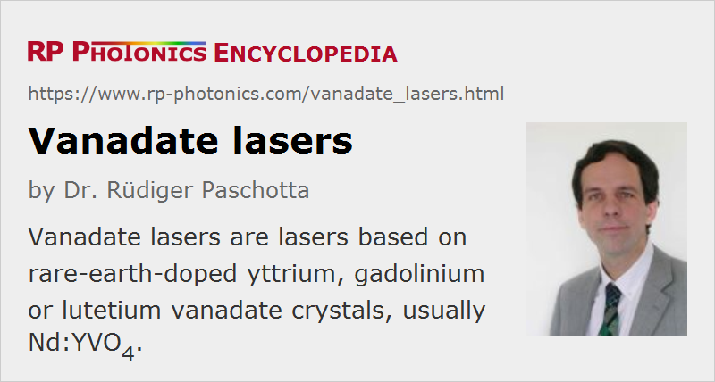

Vanadate Lasers
Definition: lasers based on rare-earth-doped yttrium, gadolinium or lutetium vanadate crystals, usually Nd:YVO4
More specific term: solid-state lasers
German: Vanadat-Laser
Categories: optical materials, lasers
How to cite the article; suggest additional literature
Author: Dr. Rüdiger Paschotta
The term vanadate laser is usually used for lasers based on neodymium-doped vanadate crystals. In particular, these include yttrium vanadate (Nd:YVO4), gadolinium vanadate (Nd:GdVO4), and lutetium vanadate (Nd:LuVO4). These vanadates are also called orthovanadates. Such materials have been known for a long time [1], but became popular only many years later, because for a long period it was difficult to grow them with high optical quality in sufficiently large size. Apart from progress in crystal growth, the advent of diode pumping increased the interest in vanadates also because smaller crystals could be used.
There are also vanadate crystals doped with other rare earth ions, e.g. with ytterbium, erbium, thulium or holmium doping. Due to the similar size, yttrium, gadolinium or lutetium ions can be replaced with laser-active rare earth ions without strongly affecting the lattice structure. This is important e.g. for preserving high thermal conductivity of the doped materials.
Vanadate crystals are naturally birefringent, which eliminates thermally induced depolarization loss in high-power lasers. Also, the laser gain is strongly polarization dependent (→ polarization of light); the highest gain is usually achieved for polarization along the c axis. The pump absorption is also strongly polarization-dependent (except at special wavelengths), which can cause problems e.g. when using a fiber-coupled pump source with drifting polarization.
For Nd:YVO4, the typical laser emission wavelength is 1064 nm, i.e., the same as for Nd:YAG. Other important emission wavelengths are 914 and 1342 nm. The latter emission line is much stronger than the corresponding 1.32-μm line in Nd:YAG, thus allowing for much better performance in 1.3-μm operation.
Table 1: Some properties of Nd:YVO4 = neodymium-doped yttrium vanadate.
| Property | Value |
|---|---|
| chemical formula | Nd3+:YVO4 |
| crystal structure | tetragonal |
| mass density | 4.22 g/cm3 |
| Moh hardness | 5–6 |
| Young's modulus | 133 GPa |
| tensile strength | 53 MPa |
| melting point | 1810 °C |
| thermal conductivity | ≈ 5 W / (m K) (values around 9–12 are also found in the literature) |
| thermal expansion coefficient | 11 × 10−6 K−1 (c direction), 4.4 × 10−6 K−1 (a direction) |
| transparency range | 0.3–2.5 μm |
| birefringence | positive uniaxial |
| refractive index at 1064 nm | 2.17 for c polarization (extraordinary), 1.96 ordinary index |
| temperature dependence of refractive index | 3 × 10−6 K−1 in c direction, 8.5 × 10−6 K−1 in the a direction |
| Nd density for 1% at. doping | 1.24 × 1020 cm−3 |
| fluorescence lifetime | 90 μs |
| absorption cross section at 808 nm | 60 × 10−20 cm2 (c polarization) |
| emission cross section at 1064 nm | 114 × 10−20 cm2 (c polarization) |
| gain bandwidth | 1 nm |
Nd:YVO4 lasers are usually diode-pumped, but can also be lamp-pumped. Compared with Nd:YAG (→ YAG lasers), Nd:YVO4 exhibits a much higher pump absorption and gain (due to the very high absorption and laser cross sections), a broader gain bandwidth (around 1 nm), a much broader wavelength range for pumping (often eliminating the need to stabilize the pump wavelength), a shorter upper-state lifetime (≈ 100 μs for not too high neodymium concentrations), a higher refractive index, a lower thermal conductivity, and birefringence. The consequences of these differences for various modes of laser operation are the following:
- For continuous-wave operation, Nd:YVO4 allows overall similar performance to Nd:YAG in cases with medium or high power. Whereas the thermal conductivity is worse, the temperature coefficient of the refractive index is smaller, so that thermal lensing is not stronger. Due to its high gain efficiency, Nd:YVO4 is better than Nd:YAG for lasers with very low threshold pump power.
- Nd:YVO4 is extremely well suited for passively mode-locked lasers with very high pulse repetition rate; nearly 160 GHz have been demonstrated. This feature results mainly from the high laser cross sections and the strong pump absorption.
- For Q-switched lasers, Nd:YVO4 does not allow for pulse energies as high as for Nd:YAG, because its capability for energy storage is lower than that of Nd:YAG due to the lower upper-state lifetime and the high gain efficiency. On the other hand, Nd:YVO4 is better suited for high pulse repetition rates, where it still allows the generation of fairly short Q-switched pulses.
Compared with Nd:YVO4, Nd:GdVO4 has a similar thermal conductivity, a slightly shorter emission wavelength (1063 nm), a somewhat larger gain bandwidth, lower emission cross sections, and still higher pump absorption. Note, however, that the published data concerning thermal conductivity of vanadate crystals differ considerably, so there are some significant uncertainties.
Suppliers
The RP Photonics Buyer's Guide contains 12 suppliers for vanadate lasers.
Questions and Comments from Users
Here you can submit questions and comments. As far as they get accepted by the author, they will appear above this paragraph together with the author’s answer. The author will decide on acceptance based on certain criteria. Essentially, the issue must be of sufficiently broad interest.
Please do not enter personal data here; we would otherwise delete it soon. (See also our privacy declaration.) If you wish to receive personal feedback or consultancy from the author, please contact him e.g. via e-mail.
By submitting the information, you give your consent to the potential publication of your inputs on our website according to our rules. (If you later retract your consent, we will delete those inputs.) As your inputs are first reviewed by the author, they may be published with some delay.
Bibliography
| [1] | J. R. O'Connor, “Unusual crystal-field energy levels and efficient laser properties of YVO4:Nd”, Appl. Phys. Lett. 9, 407 (1966), doi:10.1063/1.1754631 |
| [2] | A. I. Zagumennyi et al., “The Nd3+:GdVO4 crystal: a new material for diode-pumped lasers”, Sov. J. Quantum Electron. 22, 1071 (1992), doi:10.1070/QE1992v022n12ABEH003672 |
| [3] | J. L. Blows et al., “Heat generation in Nd:YVO4 with and without laser action”, IEEE Photon. Technol. Lett. 10 (12), 1727 (1998), doi:10.1109/68.730483 |
| [4] | N. Hodgson et al., “High power TEM00 mode operation of diode-pumped solid-state lasers”, Proc. SPIE 3611, 119 (1999), doi:10.1117/12.349265 |
| [5] | Y. Sato and T. Taira, “The studies of thermal conductivity in GdVO4, YVO4, and Y3Al5O12 measured by quasi-onedimensional flash method”, Opt. Express 14 (22), 10528 (2006), doi:10.1364/OE.14.010528 |
| [6] | N. Pavel et al., “In-band pumping of Nd-vanadate thin-disk lasers”, Appl. Phys. B 91 (3-4), 415 (2008), doi:10.1007/s00340-008-3013-7 |
| [7] | J. Liu et al., “Comparative study of high-power continuous-wave laser performance of Yb-doped vanadate crystals”, IEEE J. Quantum Electron. 45 (7), 807 (2009), doi:10.1109/JQE.2009.2014253 |
| [8] | Y. Yan et al., “Near-diffraction-limited, 35.4 W laser-diode end-pumped Nd:YVO4 slab laser operating at 1342 nm”, Opt. Lett. 34 (14), 2105 (2009), doi:10.1364/OL.34.002105 |
| [9] | D. Sangla et al., “Highly efficient Nd:YVO4 laser by direct in-band diode pumping at 914 nm”, Opt. Lett. 34 (14), 2159 (2009), doi:10.1364/OL.34.002159 |
| [10] | G. Turri et al., “Temperature-dependent stimulated emission cross section in Nd3+:YVO4 crystals”, J. Opt. Soc. Am. B 26 (11), 2084 (2009), doi:10.1364/JOSAB.26.002084 |
| [11] | X. Délen et al., “Temperature dependence of the emission cross section of Nd:YVO4 around 1064 nm and consequences on laser operation”, J. Opt. Soc. Am. B 28 (5), 972 (2011), doi:10.1364/JOSAB.28.000972 |
See also: laser crystals, YAG lasers, YLF lasers, neodymium-doped gain media, rare-earth-doped gain media, mode-locked lasers, The Photonics Spotlight 2006-09-16, The Photonics Spotlight 2006-11-04
and other articles in the categories optical materials, lasers

This encyclopedia is authored by Dr. Rüdiger Paschotta, the founder and executive of RP Photonics Consulting GmbH. How about a tailored training course from this distinguished expert at your location? Contact RP Photonics to find out how his technical consulting services (e.g. product designs, problem solving, independent evaluations, training) and software could become very valuable for your business!
|  |
If you like this page, please share the link with your friends and colleagues, e.g. via social media:
These sharing buttons are implemented in a privacy-friendly way!